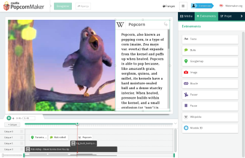

Compléments
Séquençage
Popcorn.js nous offre la possibilité d'assembler plusieurs séquences de plusieurs vidéos en une seul. Cela permet de seulement lire et sous-titrer 10s d'une vidéo et 20s d'une autre par exemple et de l'afficher comme une unique vidéo.
1
var sequence = Popcorn.sequence("conteneur_sequence",[{
2
src: "http://upload.wikimedia.org/wikipedia/commons/e/e6/Typing_example.ogv",
3
in: 0,
4
out: 3
5
},{6
src: "http://upload.wikimedia.org/wikipedia/commons/e/e6/Typing_example.ogv",
7
in: 10,
8
out: 13
9
},{10
src: "http://jplayer.org/video/m4v/Big_Buck_Bunny_Trailer.m4v",
11
in: 5,
12
out: 8
13
}]);
14
sequence.play();
Popcorn Maker
Mozilla a aussi crée une interface web pour réaliser des projets Popcorn.js. Celle-ci est très ergonomique et intuitive, spécialement pour les non-programmeurs. Elle est disponible à l’adresse : popcorn.webmaker.org

Complément : Liens utiles
Page github (code source et instructions): github.com/mozilla/popcorn-js
Documentation de l'API: popcornjs.org/popcorn-docs/